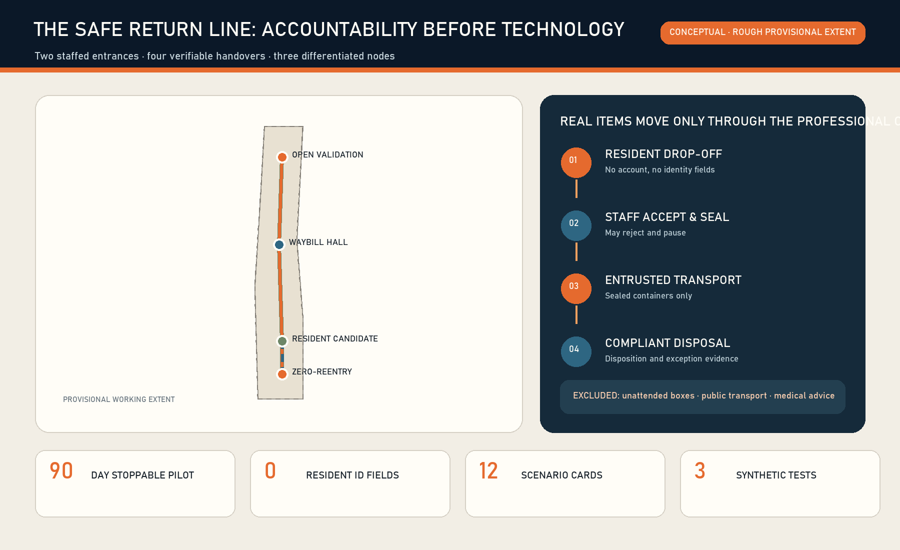
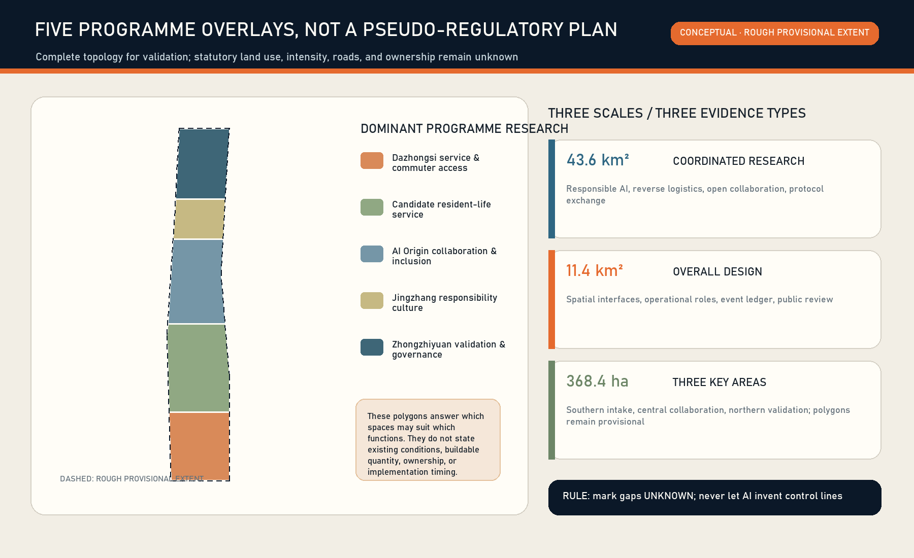
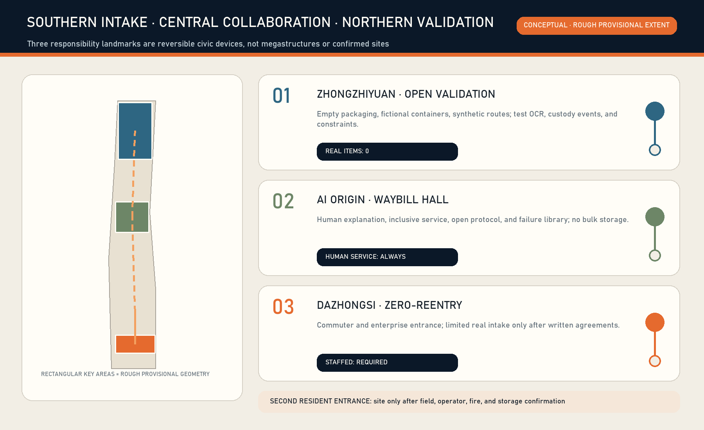
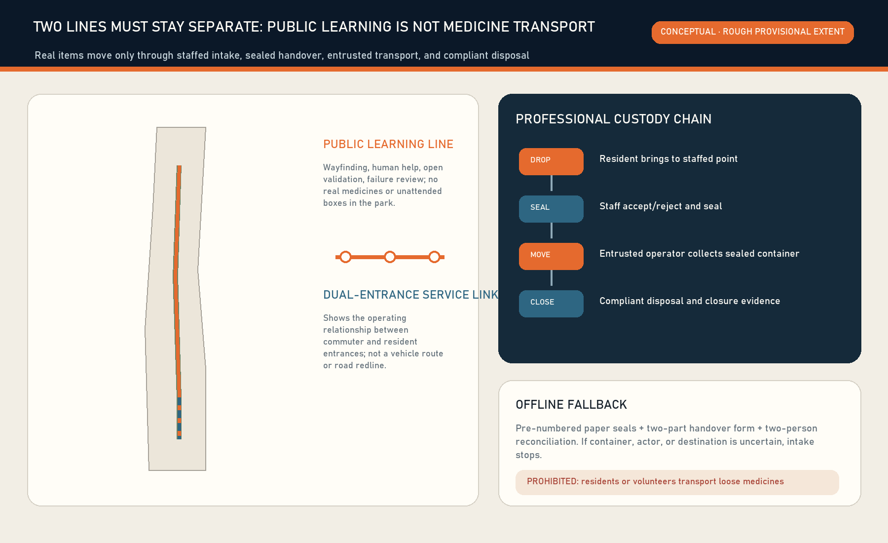
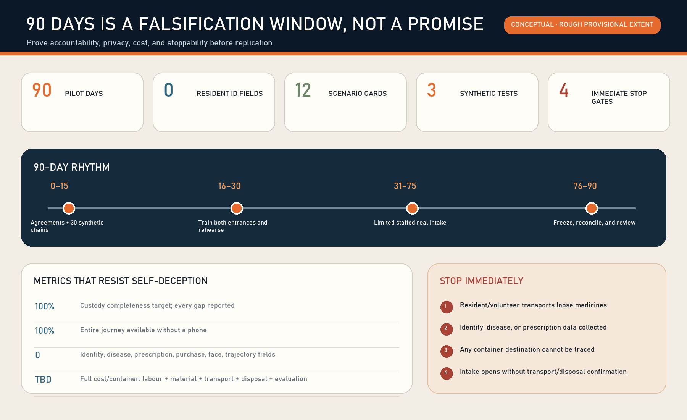

ZERO-REENTRY GATE
Staffed Dazhongsi commuter/enterprise entrance
The Safe Return Line is not a smarter box. It is responsibility infrastructure for the safe exit of expired and unwanted household medicines. Residents drop off; designated staff accept, reject, and seal; entrusted operators transport sealed containers; compliant operators dispose.
Location check: upstream PROV-KEY-003 is a provisional placeholder not anchored to Dazhongsi metro. Public calculations in Issue #1029 report its centroid about 2.26 km away. This exhibit neither shifts it nor treats the mapped position as a real station, community or medicine-return site. A canonical or official update triggers whole-package recalculation.
No identity, disease, prescription, purchase, or trajectory data; no medical judgement; no unattended 24-hour public box.

Staffed Dazhongsi commuter/enterprise entrance
AI Origin public explanation and open collaboration
Zhongzhiyuan uses empty packaging and synthetic events only
Site only after field and operator confirmation


Accept → seal → transport receipt → disposal confirmation. AI offers prompts, anomaly alerts, and route options; a person holds final authority at every step.

Days 0–15: agreements and synthetic chains. 16–30: training. 31–75: limited staffed intake. 76–90: freeze expansion, reconcile, and review.

Five figures jointly cover three scales, key areas, programme overlays, mobility, blue-green public space, buildings and renewal actions, and AI scenarios. All area ratios use the rough provisional extent for consistency checks only.
11,412,825.386 m²
5.1649% conceptual learning corridor
0.4604% conceptual nodes
Formal v2 bilingual package: 13 chapters, five figure families, three spatial scales, 12 scenario cards, and three synthetic test families.
Repository scripts verify deterministic, professional, spatial, and visual gates; provisional geometry remains low confidence.
Primary government pages, public repositories, and licences are recorded in sources.json. This exhibit loads no remote resources.
Concept sites cannot become implementation commitments before written planning, ownership, fire, storage, transport, and disposal confirmation.
Event traceability, modular public-health logistics, privacy minimisation, constraint optimisation, and professional disposal separation come from primary public projects; licences and limits are recorded in sources.json.